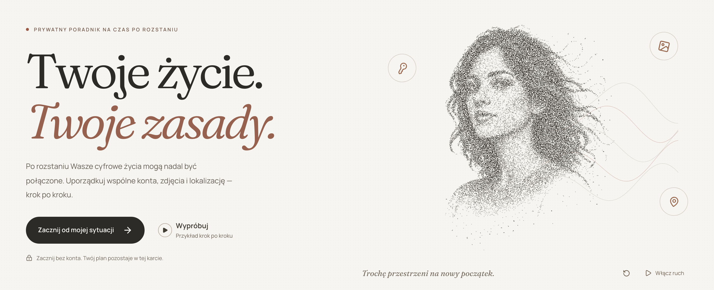
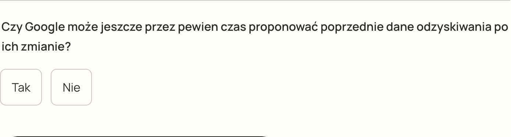

PO ROZSTANIU ZOSTAJE WIĘCEJ, NIŻ MYŚLISZ
Rozstanie kończy
związek.
Nie każde
cyfrowe połączenie.
Ukryte połączenia. Realne ryzyko.
UNTANGLE / TWÓJ NOWY ROZDZIAŁ
untangle.Twój prywatny przewodnik po rozstaniu.
TWOJE ŻYCIE. TWOJE ZASADY.

01 / JEDNA KONKRETNA HISTORIA
MAJA · FIKCYJNY PRZYKŁADCo nadal
nas łączy?
Wspólny laptop. Zdjęcia.
I pytanie, co zrobić dalej.
ZACZNIJ TUTAJ
02 / OD SYTUACJI DO PLANU
Sześć kroków.
Dobry początek.
- 01Odzyskiwanie dostępu
- 02Urządzenia i hasło
- 03Zdjęcia i udostępnianie
Ty wybierasz, co zostaje w planie.
03 / JAK DZIAŁA AGENT AI
Od źródła do następnego kroku.
01 / ŹRÓDŁOSięga do
poradnika.
Czyta instrukcję
i potrzebne przygotowania.
→02 / WYJAŚNIENIETłumaczy
prostym językiem.
Co zrobić.
Dlaczego to ważne.
→03 / PROPOZYCJAWskazuje
kolejny krok.
Jedna czynność.
Pytanie sprawdzające.
→04 / TWOJA DECYZJATy oceniasz
sugestię.
Możesz działać,
zatrzymać się lub zapytać.
03 / POMOC PRZY KONKRETNYM KROKU
Najpierw
zrozumienie.
Poradnik → wyjaśnienie
→ propozycja działania.
Decyzja zawsze należy do Ciebie.AI NIE ZMIENIA USTAWIEŃ KONTA
04 / ZROZUM, ZANIM ZMIENISZ
Hasło to
jedna część.
Co zmieni?
Co nadal wymaga uwagi?
Wyjaśnienie z odnośnikiem do źródła.04 / POMOC W DOBRANIU SŁÓW
Jaśniejsze słowa.
Twój sens.
Popraw propozycję
albo zachowaj oryginał.
Przygotowany przykład asystenta.05 / ZATWIERDZASZ TY
Twój wybór.
Twój plan.
Kroki i notatka.
Sprawdź je przed zatwierdzeniem.
6 kroków0 zmian na kontach
06 / PLAN TO DOPIERO POCZĄTEK
Jeden krok.
Z podpowiedzią.
Czytelna instrukcja.
W Twoim tempie.
01 / SPRÓBUJ02 / ZROZUM03 / ZAPISZ WYNIK
KRÓTKIE PYTANIE SPRAWDZAJĄCE

WIĘCEJ ZROZUMIENIA. WŁASNE TEMPO.
Wiesz, co dalej.
Możesz poprosić o pomoc.
TWOJE ŻYCIE. TWOJE ZASADY.
Demo krok po kroku ↗
untangle-orpin.vercel.app/?lang=pl
Twój prywatny przewodnik. Pomoc na Twoich zasadach.
MAJA JEST FIKCYJNA · PRZYGOTOWANY PRZYKŁAD